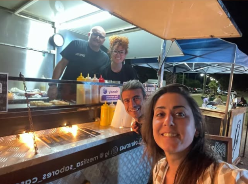

Un Sueño Nacido en 2020
Mestiza Sabores Caseros nació en Colonia del Sacramento en plena pandemia de 2020, cuando Daniel Abbona y su familia decidieron transformar la incertidumbre en oportunidad. Lo que comenzó con una simple mesita en la feria de los domingos, hoy es un emprendimiento gastronómico que se ha convertido en infaltable en ferias, eventos y encuentros locales.
Nuestro diferencial está en la artesanía y el corazón familiar que ponemos en cada plato. Elaboramos todo nosotros mismos: desde las tortillas y encurtidos hasta las salsas picantes y aderezos que acompañan nuestros tacos, smash burgers, bocatas y opciones vegetarianas y veganas. Cada bocado busca mantener un sabor único, constante y reconocible, que represente quiénes somos.
El Primer Food Truck de Colonia
De la feria y la rambla pasamos a tener nuestro propio food truck, el primero en Colonia, que nos permitió ampliar la propuesta con hamburguesas de estilo americano y seguir creciendo junto a la comunidad que nos apoya.
Hoy seguimos recorriendo ferias gastronómicas y cerveceras, ofreciendo delivery cuando no estamos en eventos, y acompañando también a familias, amigos y empresas en celebraciones privadas.
Un Lugar de Encuentro y Disfrute
Mestiza es eso: comida rápida hecha con cariño, tradición y el sabor casero de Uruguay, que creció desde lo simple para convertirse en un lugar de encuentro y disfrute.
